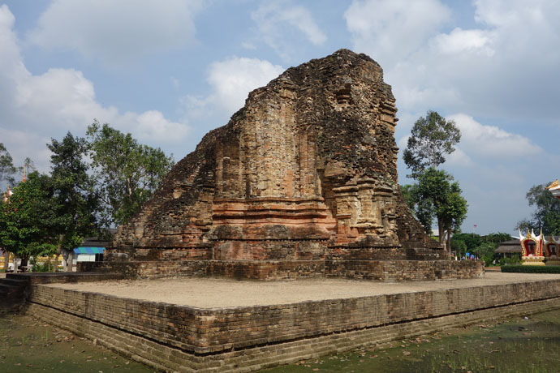

อาณาจักรศรีวิชัย

อาณาจักรศรีวิชัย หรือ อาณาจักรศรีโพธิ์ ก่อตั้งโดยราชวงศ์ไศเลนทร์ ในช่วงที่อาณาจักรฟูนันล่มสลาย มีอาณาเขตครอบคลุมมลายู เกาะชวา เกาะสุมาตรา ช่องแคบมะละกา ช่องแคบซุนดา และบริเวณภาคใต้ของประเทศไทย โดยมีศูนย์กลางอยู่บริเวณจังหวัดสุราษฎร์ธานีของประเทศไทยในปัจจุบัน พื้นที่อาณาจักรแบ่งได้สามส่วน คือส่วนคาบสมุทรมลายู เกาะสุมาตรา และเกาะชวา โดยส่วนของชวาได้แยกตัวออกไปตั้งเป็นอาณาจักรมัชปาหิต ต่อมาเมื่ออาณาจักรศรีวิชัยอ่อนแอลง อาณาจักรมัชปาหิตได้ยกทัพเข้ามาตีศรีวิชัย ได้ดินแดนสุมาตราและบางส่วนของคาบสมุทรมลายูไป และทำให้ศรีวิชัยล่มสลายไปในที่สุด ส่วนพื้นที่คาบสมุทรที่เหลือ ต่อมาเชื้อพระวงศ์จากอาณาจักรเพชรบุรี ได้เสด็จมาฟื้นฟูและตั้งเป็นอาณาจักรนครศรีธรรมราช ศาสตราจารย์ยอร์ช เซเดส์ ได้ระบุว่า ศรีวิชัยสถาปนาในช่วงเวลาก่อนปี พ.ศ. 1225 เล็กน้อย[3] มีการพบศิลาจารึกภาษามลายูโบราณเกี่ยวกับอาณาจักรศรีวิชัยทั้งที่สุมาตรา และที่วัดเสมาเมืองจังหวัดนครศรีธรรมราช และพบศิลาจารึกภาษาสันสกฤต เมืองไชยา ระบุว่าศรีวิชัยเป็นเมืองท่าค้าพริก ดีปลีและพริกไทยเม็ด โดยมีต้นหมากและต้นมะพร้าวจำนวนมาก